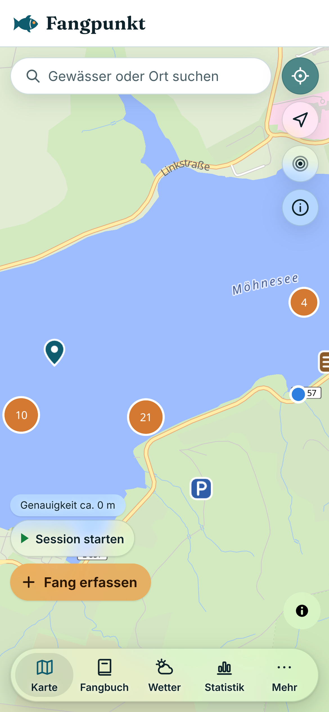
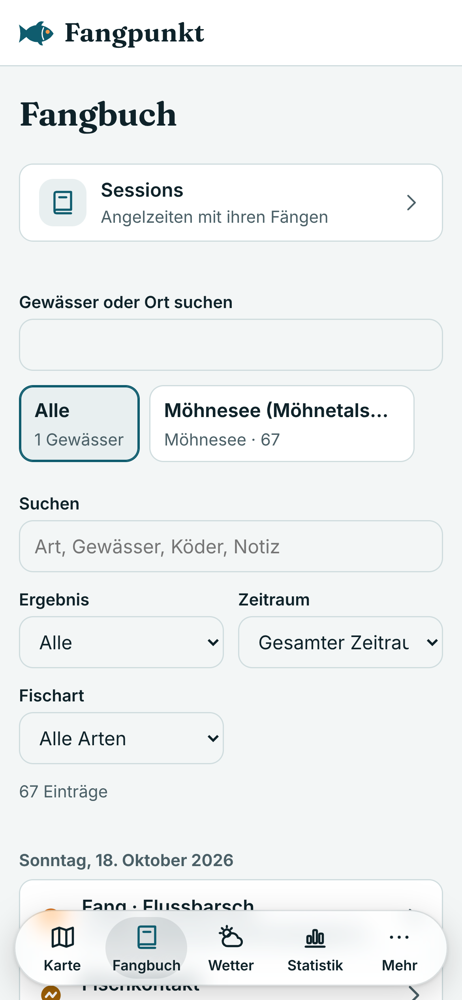
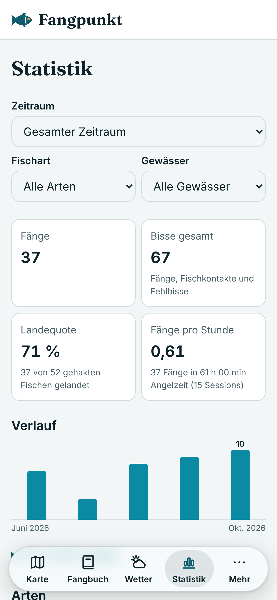

Werkstatt-Notiz
Meine erste Angel-App war eine einzige HTML-Datei.
Für einen einzigen See.
Dann wollte ich mehr.
Jeden See, jeden Fluss in Deutschland. Fänge, Wetter, Statistik – an einem Ort.
Also hab ich neu angefangen
Heute: Fangpunkt.



Was mir wichtig war
1Gewässer in ganz Deutschland
2Kein Konto, keine Werbung
3Deine Daten bleiben auf deinem Handy

Fangpunkt
Gebaut nebenbei, Schritt für Schritt. Folg mir, wenn du sehen willst, wie es weitergeht.
Link in der Bio